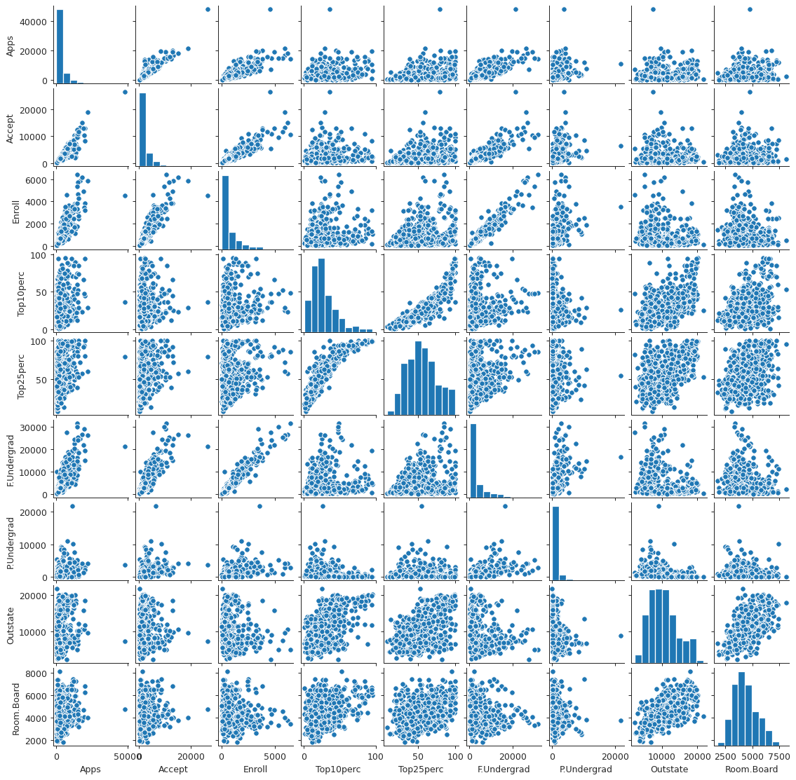
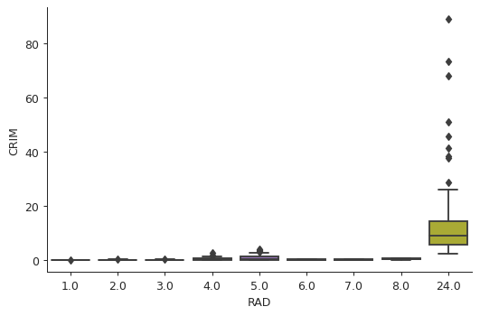

Statistical Learning
Table of Contents
Notes
Inference is what statistics is mostly about, prediction is what machine learning is mostly about. – Statistics vs Machine Learning, fight!
Models
- Parametric models reduce the problem of estimating \(f\) to estimating a few parameters. Easy to interpret, but might not fit the data well.
- Non-parametric models do not assume any particular functional form for \(f\). Usually fit the data better than parametric models, given that there are large number of observations, much larger than that required by parametric models.
Learning
- Supervised learning: For each observation \(i\) of predictor measurements \(x_i\) there is an associated response measurement \(y_i\).
- Unsupervised learning: For each observation \(i\) there is a vector of measurements \(x_i\) but no associated response measurement.
- Semi-supervised learning: Response measurements are available for some of the observations but not all.
Variables & Problems
- Quantitative variables: numerical
- Qualitative variables: categorical
- Regression problems have quantitative response.
- Classification problems have qualitative response.
Accuracy
There is no free lunch in statistics.
- Mean squared error is typically used for regression problems.
- Error rate, proportion of mistakes that are made if we apply the estimate \(\hat{f}\) to the data, is typically used for classification problems.
- Test error rate is minimized by the Bayes Classifier.
- Cross-validation is used to estimate test MSE using training data.
- Variance is the change in the estimate \(\hat{f}\) of \(f\) due to change in training data.
- Bias is the error due to approximating a complicated problem with a simpler model.
- To reduce test error we need a model with low variance and low bias.
- Increasing flexibility of the model generally decreases bias but increases variance.
Exercises
Question 1
- (n > p) We can expect the performance of the flexible method to be better. With the large sample size, the flexible method will be able to better fit the data than the inflexible method.
- (n < p) Since the sample size to small we can expect the flexible method to overfit. The inflexible method will perform better.
- The inflexible method will suffer from high bias. The flexible method will perform better.
- The flexible method might fit the erroneous observations. It will perform worse than the inflexible method.
Question 2
- The response is quantitative. This is a regression problem. We are trying to infer how does the CEO salary depend on the various factors. We are not trying to predict the CEO salary.
- The response is qualitative. This is a classification problem. We are trying to predict whether the product will be a success or a failure.
- The response is qualitative. This is a regression problem. We are interested in prediction.
Question 3
The sketches are as follows:
import numpy as np import matplotlib.pyplot as plt import seaborn as sns sns.set_style("ticks") flexibility = np.linspace(0, 10, 100) squared_bias = 0.02 * (10 - flexibility) ** 2 variance = 0.02 * flexibility ** 2 training_error = 0.003 * (10 - flexibility) ** 3 test_error = 3 - 0.6 * flexibility + 0.06 * flexibility ** 2 bayes_error = np.ones_like(flexibility) plt.close('all') # To prevent memory consumption fig, ax = plt.subplots() ax.plot(flexibility, squared_bias, label="Bias") ax.plot(flexibility, variance, label="Variance") ax.plot(flexibility, training_error, label="Training Error") ax.plot(flexibility, test_error, label="Test Error") ax.plot(flexibility, bayes_error, label="Bayes Error") ax.set_xlabel("Flexibility") ax.legend(loc="upper center") sns.despine() fig.savefig("img/bv-decomp.png", dpi=90)
These graphs are not exact representations of how actual bias, variance, etc. would look, but an estimation that conveys the general idea.
The (squared) bias decreases with increasing flexibility because the model fits to the data better and better. On the other hand the model is more sensitive to training data with increasing flexibility, resulting in the increasing trend for the variance.
The training error is similar to the bias, for classification problems. The test error initially decreases since with increasing flexibility the model has a better chance of predicting the test response. However beyond a certain flexibility it is overfitted to the training data and gives sub-optimal results with the test data.
The Bayes error is independent of the flexibility of the model. It completely depends on the data.
Question 4
- Three real-life applications of classification are:
- Predicting if an email is spam or non-spam.
- Predicting if a customer will remain loyal to the brand or not.
- Three real-life applications of regression are:
- Predicting real estate prices based on certain factors, like location, size, etc. The price will be the response, and location, size, etc. will be the predictors.
- Three real-life applications of cluster analysis are:
- Grouping galaxies based on the profile of the light that they emit.
- Checking how similar two documents are. This could be useful in preventing plagiarism.
Question 5
Advantages:
- Flexible approach is better able to fit the training data.
- Flexible approach might be able to estimate the underlying function better than the inflexible approach.
Disadvantages:
- Flexible approaches are prone to overfitting.
- Flexible approaches are more difficult to interpret than inflexible approaches.
A more flexible approach is more suitable when we are interested in prediction and a large amount of training data is available. A less flexible approach is more suitable when we are interested in inference, or if we do not have sufficient data.
Question 6
In a parametric approach we first choose a model to fit the data to. This reduces the problem of estimating the true function to estimating the models of the parameter. Non-parametric approaches do not make any assumption about the form of the true function. One advantage of a parametric approach is that it does not require as much training data as a non-parametric approach. It also easier to interpret and less prone to overfitting. On the other hand the model used in a parametric approach might be nothing like the true function.
Question 7
The data is as follows:
| Obs. | X1 | X2 | X3 | Y |
|---|---|---|---|---|
| 1 | 0 | 3 | 0 | Red |
| 2 | 2 | 0 | 0 | Red |
| 3 | 0 | 1 | 3 | Red |
| 4 | 0 | 1 | 2 | Green |
| 5 | -1 | 0 | 1 | Green |
| 6 | 1 | 1 | 1 | Red |
The test point is X1 = X2 = X3 = 0. The Euclidean distance between the observations and the test point are calculated as follows:
import pandas as pd from tabulate import tabulate df = pd.DataFrame.from_dict({'X1': [0, 2, 0, 0, -1, 1], 'X2': [3, 0, 1, 1, 0, 1], 'X3': [0, 0, 3, 2, 1, 1], 'Y':['Red', 'Red', 'Red', 'Green', 'Green', 'Red']}) test = np.array([0, 0, 0]) df['Distance'] = np.linalg.norm(df[['X1', 'X2', 'X3']].values-test, axis=1) pd.set_option('precision', 5) print(tabulate(df, df.columns, tablefmt="orgtbl"))
| | X1 | X2 | X3 | Y | Distance | |----+------+------+------+-------+------------| | 0 | 0 | 3 | 0 | Red | 3 | | 1 | 2 | 0 | 0 | Red | 2 | | 2 | 0 | 1 | 3 | Red | 3.16228 | | 3 | 0 | 1 | 2 | Green | 2.23607 | | 4 | -1 | 0 | 1 | Green | 1.41421 | | 5 | 1 | 1 | 1 | Red | 1.73205 |
If \(K = 1\), then the prediction is Green. From the above table we see that the test point is closest to the fifth observations, and so classify it in the same group as the fifth observation.
For \(K = 3\), the neighbors are observations 2, 5, and 6. The responses for 2 and 6 are Red. The response for 5 is Green. The probability for being Red is higher than being Green (2/3 > 1/3). Using the idea of the Bayes classifier we predict that the response will be Red.
If the Bayes decision boundary is highly nonlinear then the best value for \(K\) will be small. A smaller \(K\) results in more granular grouping, that is for small \(K\) the decision boundary is better able to capture the local non-linearities, because there will be very few neighbors.
Question 8
The College data set
college = pd.read_csv("data/College.csv") print(tabulate(college.head(), college.columns, tablefmt="orgtbl"))
| | Unnamed: 0 | Private | Apps | Accept | Enroll | Top10perc | Top25perc | F.Undergrad | P.Undergrad | Outstate | Room.Board | Books | Personal | PhD | Terminal | S.F.Ratio | perc.alumni | Expend | Grad.Rate | |----+------------------------------+-----------+--------+----------+----------+-------------+-------------+---------------+---------------+------------+--------------+---------+------------+-------+------------+-------------+---------------+----------+-------------| | 0 | Abilene Christian University | Yes | 1660 | 1232 | 721 | 23 | 52 | 2885 | 537 | 7440 | 3300 | 450 | 2200 | 70 | 78 | 18.1 | 12 | 7041 | 60 | | 1 | Adelphi University | Yes | 2186 | 1924 | 512 | 16 | 29 | 2683 | 1227 | 12280 | 6450 | 750 | 1500 | 29 | 30 | 12.2 | 16 | 10527 | 56 | | 2 | Adrian College | Yes | 1428 | 1097 | 336 | 22 | 50 | 1036 | 99 | 11250 | 3750 | 400 | 1165 | 53 | 66 | 12.9 | 30 | 8735 | 54 | | 3 | Agnes Scott College | Yes | 417 | 349 | 137 | 60 | 89 | 510 | 63 | 12960 | 5450 | 450 | 875 | 92 | 97 | 7.7 | 37 | 19016 | 59 | | 4 | Alaska Pacific University | Yes | 193 | 146 | 55 | 16 | 44 | 249 | 869 | 7560 | 4120 | 800 | 1500 | 76 | 72 | 11.9 | 2 | 10922 | 15 |
College names as index
college.set_index("Unnamed: 0", inplace=True) college.index.name = "Names" headers = [college.index.name] + list(college.columns) print(tabulate(college.head(), headers, tablefmt="orgtbl"))
| Names | Private | Apps | Accept | Enroll | Top10perc | Top25perc | F.Undergrad | P.Undergrad | Outstate | Room.Board | Books | Personal | PhD | Terminal | S.F.Ratio | perc.alumni | Expend | Grad.Rate | |------------------------------+-----------+--------+----------+----------+-------------+-------------+---------------+---------------+------------+--------------+---------+------------+-------+------------+-------------+---------------+----------+-------------| | Abilene Christian University | Yes | 1660 | 1232 | 721 | 23 | 52 | 2885 | 537 | 7440 | 3300 | 450 | 2200 | 70 | 78 | 18.1 | 12 | 7041 | 60 | | Adelphi University | Yes | 2186 | 1924 | 512 | 16 | 29 | 2683 | 1227 | 12280 | 6450 | 750 | 1500 | 29 | 30 | 12.2 | 16 | 10527 | 56 | | Adrian College | Yes | 1428 | 1097 | 336 | 22 | 50 | 1036 | 99 | 11250 | 3750 | 400 | 1165 | 53 | 66 | 12.9 | 30 | 8735 | 54 | | Agnes Scott College | Yes | 417 | 349 | 137 | 60 | 89 | 510 | 63 | 12960 | 5450 | 450 | 875 | 92 | 97 | 7.7 | 37 | 19016 | 59 | | Alaska Pacific University | Yes | 193 | 146 | 55 | 16 | 44 | 249 | 869 | 7560 | 4120 | 800 | 1500 | 76 | 72 | 11.9 | 2 | 10922 | 15 |
Summary of data
print(tabulate(college.describe(), college.columns, tablefmt="orgtbl"))
| Private | Apps | Accept | Enroll | Top10perc | Top25perc | F.Undergrad | P.Undergrad | Outstate | Room.Board | Books | Personal | PhD | Terminal | S.F.Ratio | perc.alumni | Expend | Grad.Rate | |-----------+----------+----------+----------+-------------+-------------+---------------+---------------+------------+--------------+----------+------------+----------+------------+-------------+---------------+----------+-------------| | count | 777 | 777 | 777 | 777 | 777 | 777 | 777 | 777 | 777 | 777 | 777 | 777 | 777 | 777 | 777 | 777 | 777 | | mean | 3001.64 | 2018.8 | 779.973 | 27.5586 | 55.7967 | 3699.91 | 855.299 | 10440.7 | 4357.53 | 549.381 | 1340.64 | 72.6602 | 79.7027 | 14.0897 | 22.7439 | 9660.17 | 65.4633 | | std | 3870.2 | 2451.11 | 929.176 | 17.6404 | 19.8048 | 4850.42 | 1522.43 | 4023.02 | 1096.7 | 165.105 | 677.071 | 16.3282 | 14.7224 | 3.95835 | 12.3918 | 5221.77 | 17.1777 | | min | 81 | 72 | 35 | 1 | 9 | 139 | 1 | 2340 | 1780 | 96 | 250 | 8 | 24 | 2.5 | 0 | 3186 | 10 | | 25% | 776 | 604 | 242 | 15 | 41 | 992 | 95 | 7320 | 3597 | 470 | 850 | 62 | 71 | 11.5 | 13 | 6751 | 53 | | 50% | 1558 | 1110 | 434 | 23 | 54 | 1707 | 353 | 9990 | 4200 | 500 | 1200 | 75 | 82 | 13.6 | 21 | 8377 | 65 | | 75% | 3624 | 2424 | 902 | 35 | 69 | 4005 | 967 | 12925 | 5050 | 600 | 1700 | 85 | 92 | 16.5 | 31 | 10830 | 78 | | max | 48094 | 26330 | 6392 | 96 | 100 | 31643 | 21836 | 21700 | 8124 | 2340 | 6800 | 103 | 100 | 39.8 | 64 | 56233 | 118 |
Scatter plot matrix
plot_columns = list(college.columns)[:10] plt.close('all') spm = sns.pairplot(college[plot_columns]) spm.fig.set_size_inches(12, 12) spm.savefig("img/college_scatter.png", dpi=90)

Box plots
plt.close('all') bp1 = sns.boxplot(x="Private", y="Outstate", data=college) sns.despine() plt.tight_layout() bp1.get_figure().savefig("img/college_outstate_private.png", dpi=90)
Elite universities
college["Elite"] = college["Top10perc"].apply(lambda x: "Yes" if x > 50 else "No") print(college["Elite"].value_counts())
No 699 Yes 78 Name: Elite, dtype: int64
There are 78 elite universities, where more than 50% of their students come from the top 10% of their high school classes.
plt.close('all') bp2 = sns.boxplot(x="Elite", y="Outstate", data=college) sns.despine() plt.tight_layout() bp2.get_figure().savefig("img/college_outstate_elite.png", dpi=90)
Binning and histograms
We are going to produce histograms for some of the quantitative variables with differing number of bins. We first need to bin these quantitative variables.
print(college.info())
<class 'pandas.core.frame.DataFrame'> Index: 777 entries, Abilene Christian University to York College of Pennsylvania Data columns (total 19 columns): # Column Non-Null Count Dtype --- ------ -------------- ----- 0 Private 777 non-null object 1 Apps 777 non-null int64 2 Accept 777 non-null int64 3 Enroll 777 non-null int64 4 Top10perc 777 non-null int64 5 Top25perc 777 non-null int64 6 F.Undergrad 777 non-null int64 7 P.Undergrad 777 non-null int64 8 Outstate 777 non-null int64 9 Room.Board 777 non-null int64 10 Books 777 non-null int64 11 Personal 777 non-null int64 12 PhD 777 non-null int64 13 Terminal 777 non-null int64 14 S.F.Ratio 777 non-null float64 15 perc.alumni 777 non-null int64 16 Expend 777 non-null int64 17 Grad.Rate 777 non-null int64 18 Elite 777 non-null object dtypes: float64(1), int64(16), object(2) memory usage: 141.4+ KB None
We see that there are 17 quantitative variables. For this activity I will choose
Enroll, Books, PhD, and Grad.Rate as the quantitative variables to plot.
To keep things simple we will bin these variables in to either 3 bins or 5 bins.
cut_bins3 = ["Low", "Medium", "High"] cut_bins5 = ["Very Low", "Low", "Medium", "High", "Very High"] college["Enroll2"] = pd.cut(college["Enroll"], 5, labels=cut_bins5) college["Books2"] = pd.cut(college["Books"], 3, labels=cut_bins3) college["PhD2"] = pd.cut(college["PhD"], 3, labels=cut_bins3) college["Grad.Rate2"] = pd.cut(college["Grad.Rate"], 5, labels=cut_bins5) plt.close("all") fig, axs = plt.subplots(2, 2) sns.countplot(college["Enroll2"], ax=axs[0, 0]) sns.countplot(college["Books2"], ax=axs[0, 1]) sns.countplot(college["PhD2"], ax=axs[1, 0]) sns.countplot(college["Grad.Rate2"], ax=axs[1, 1]) sns.despine() axs[0, 0].set_xticklabels(axs[0, 0].get_xticklabels(), rotation=40, ha="right") axs[0, 1].set_xticklabels(axs[0, 1].get_xticklabels(), rotation=40, ha="right") axs[1, 0].set_xticklabels(axs[1, 0].get_xticklabels(), rotation=40, ha="right") axs[1, 1].set_xticklabels(axs[1, 1].get_xticklabels(), rotation=40, ha="right") plt.subplots_adjust(wspace=0.4, hspace=1) fig.savefig("img/college_hist.png", dpi=90)
Question 9
Predictors of the Auto data set
auto = pd.read_csv("data/Auto.csv") auto.dropna(inplace=True) print(auto.info())
<class 'pandas.core.frame.DataFrame'> Int64Index: 397 entries, 0 to 396 Data columns (total 9 columns): # Column Non-Null Count Dtype --- ------ -------------- ----- 0 mpg 397 non-null float64 1 cylinders 397 non-null int64 2 displacement 397 non-null float64 3 horsepower 397 non-null object 4 weight 397 non-null int64 5 acceleration 397 non-null float64 6 year 397 non-null int64 7 origin 397 non-null int64 8 name 397 non-null object dtypes: float64(3), int64(4), object(2) memory usage: 31.0+ KB None
We see that there are two qualitative predictors, horsepower and name. While
name is expected to be qualitative, horsepower should presumably be
quantitative. We should check the data in the horsepower column and see if we
can convert that to a numeric form.
print(auto["horsepower"].unique())
['130' '165' '150' '140' '198' '220' '215' '225' '190' '170' '160' '95' '97' '85' '88' '46' '87' '90' '113' '200' '210' '193' '?' '100' '105' '175' '153' '180' '110' '72' '86' '70' '76' '65' '69' '60' '80' '54' '208' '155' '112' '92' '145' '137' '158' '167' '94' '107' '230' '49' '75' '91' '122' '67' '83' '78' '52' '61' '93' '148' '129' '96' '71' '98' '115' '53' '81' '79' '120' '152' '102' '108' '68' '58' '149' '89' '63' '48' '66' '139' '103' '125' '133' '138' '135' '142' '77' '62' '132' '84' '64' '74' '116' '82']
So the reason that horsepower is not numeric is because there are some missing
values which are represented by "?". We need to remove the rows containing the
missing data, and then make this column numeric.
auto.drop(auto[auto.horsepower == "?"].index, inplace=True) auto["horsepower"] = pd.to_numeric(auto["horsepower"]) print(auto.info())
<class 'pandas.core.frame.DataFrame'> Int64Index: 392 entries, 0 to 396 Data columns (total 9 columns): # Column Non-Null Count Dtype --- ------ -------------- ----- 0 mpg 392 non-null float64 1 cylinders 392 non-null int64 2 displacement 392 non-null float64 3 horsepower 392 non-null int64 4 weight 392 non-null int64 5 acceleration 392 non-null float64 6 year 392 non-null int64 7 origin 392 non-null int64 8 name 392 non-null object dtypes: float64(3), int64(5), object(1) memory usage: 30.6+ KB None
Now only name is the qualitative predictor.
Range of quantitative predictors
from pprint import pprint quant = auto.select_dtypes(exclude="object").columns ranges = {col: (min(auto[col]), max(auto[col])) for col in quant} pprint(ranges)
{'acceleration': (8.0, 24.8),
'cylinders': (3, 8),
'displacement': (68.0, 455.0),
'horsepower': (46, 230),
'mpg': (9.0, 46.6),
'origin': (1, 3),
'weight': (1613, 5140),
'year': (70, 82)}
Mean and standard deviation of quantitative predictors
msd = {col: {"mean": round(np.mean(auto[col]), 2), "std": round(np.std(auto[col]), 2)} for col in quant} pprint(msd) # An alternative is to use the following aggregrate method: # auto.agg(["mean", "std"])
{'acceleration': {'mean': 15.54, 'std': 2.76},
'cylinders': {'mean': 5.47, 'std': 1.7},
'displacement': {'mean': 194.41, 'std': 104.51},
'horsepower': {'mean': 104.47, 'std': 38.44},
'mpg': {'mean': 23.45, 'std': 7.8},
'origin': {'mean': 1.58, 'std': 0.8},
'weight': {'mean': 2977.58, 'std': 848.32},
'year': {'mean': 75.98, 'std': 3.68}}
Data subset
We remove the 10th through 85th observations, and then calculate the ranges, mean and standard deviation of the remaining data set.
auto2 = auto.drop(auto.index[10:85]) ranges = {col: (min(auto2[col]), max(auto2[col])) for col in quant} pprint(ranges)
{'acceleration': (8.5, 24.8),
'cylinders': (3, 8),
'displacement': (68.0, 455.0),
'horsepower': (46, 230),
'mpg': (11.0, 46.6),
'origin': (1, 3),
'weight': (1649, 4997),
'year': (70, 82)}
msd = {col: {"mean": round(np.mean(auto[col]), 2), "std": round(np.std(auto[col]), 2)} for col in quant} pprint(msd)
{'acceleration': {'mean': 15.54, 'std': 2.76},
'cylinders': {'mean': 5.47, 'std': 1.7},
'displacement': {'mean': 194.41, 'std': 104.51},
'horsepower': {'mean': 104.47, 'std': 38.44},
'mpg': {'mean': 23.45, 'std': 7.8},
'origin': {'mean': 1.58, 'std': 0.8},
'weight': {'mean': 2977.58, 'std': 848.32},
'year': {'mean': 75.98, 'std': 3.68}}
Pair plots
plt.close('all') spm = sns.pairplot(auto[["mpg", "horsepower", "weight", "displacement", "acceleration"]]) spm.fig.set_size_inches(6, 6) spm.savefig("img/auto_pair.png")
We observe that the gas mileage mpg decreases somewhat linearly as
horsepower, weight, and displacement increases. This seems reasonable.
Similarly displacement is positively correlated to weight and horsepower.
The relation between acceleration and the other variables is not easy to
interpret from these plots.
Predicting gas mileage
As we observed earlier that mpg has a linear relation with horsepower,
weight, and displacement. We can therefore use that to predict mpg.
Question 10
Boston data set
from sklearn.datasets import load_boston lb = load_boston() boston = pd.DataFrame(lb.data, columns=lb.feature_names) boston['MEDV'] = lb.target print(tabulate(boston.head(), boston.columns, tablefmt="orgtbl"))
| | CRIM | ZN | INDUS | CHAS | NOX | RM | AGE | DIS | RAD | TAX | PTRATIO | B | LSTAT | MEDV | |----+---------+------+---------+--------+-------+-------+-------+--------+-------+-------+-----------+--------+---------+--------| | 0 | 0.00632 | 18 | 2.31 | 0 | 0.538 | 6.575 | 65.2 | 4.09 | 1 | 296 | 15.3 | 396.9 | 4.98 | 24 | | 1 | 0.02731 | 0 | 7.07 | 0 | 0.469 | 6.421 | 78.9 | 4.9671 | 2 | 242 | 17.8 | 396.9 | 9.14 | 21.6 | | 2 | 0.02729 | 0 | 7.07 | 0 | 0.469 | 7.185 | 61.1 | 4.9671 | 2 | 242 | 17.8 | 392.83 | 4.03 | 34.7 | | 3 | 0.03237 | 0 | 2.18 | 0 | 0.458 | 6.998 | 45.8 | 6.0622 | 3 | 222 | 18.7 | 394.63 | 2.94 | 33.4 | | 4 | 0.06905 | 0 | 2.18 | 0 | 0.458 | 7.147 | 54.2 | 6.0622 | 3 | 222 | 18.7 | 396.9 | 5.33 | 36.2 |
print(lb['DESCR'])
.. _boston_dataset:
Boston house prices dataset
---------------------------
**Data Set Characteristics:**
:Number of Instances: 506
:Number of Attributes: 13 numeric/categorical predictive. Median Value (attribute 14) is usually the target.
:Attribute Information (in order):
- CRIM per capita crime rate by town
- ZN proportion of residential land zoned for lots over 25,000 sq.ft.
- INDUS proportion of non-retail business acres per town
- CHAS Charles River dummy variable (= 1 if tract bounds river; 0 otherwise)
- NOX nitric oxides concentration (parts per 10 million)
- RM average number of rooms per dwelling
- AGE proportion of owner-occupied units built prior to 1940
- DIS weighted distances to five Boston employment centres
- RAD index of accessibility to radial highways
- TAX full-value property-tax rate per $10,000
- PTRATIO pupil-teacher ratio by town
- B 1000(Bk - 0.63)^2 where Bk is the proportion of blacks by town
- LSTAT % lower status of the population
- MEDV Median value of owner-occupied homes in $1000's
:Missing Attribute Values: None
:Creator: Harrison, D. and Rubinfeld, D.L.
This is a copy of UCI ML housing dataset.
https://archive.ics.uci.edu/ml/machine-learning-databases/housing/
This dataset was taken from the StatLib library which is maintained at Carnegie Mellon University.
The Boston house-price data of Harrison, D. and Rubinfeld, D.L. 'Hedonic
prices and the demand for clean air', J. Environ. Economics & Management,
vol.5, 81-102, 1978. Used in Belsley, Kuh & Welsch, 'Regression diagnostics
...', Wiley, 1980. N.B. Various transformations are used in the table on
pages 244-261 of the latter.
The Boston house-price data has been used in many machine learning papers that address regression
problems.
.. topic:: References
- Belsley, Kuh & Welsch, 'Regression diagnostics: Identifying Influential Data and Sources of Collinearity', Wiley, 1980. 244-261.
- Quinlan,R. (1993). Combining Instance-Based and Model-Based Learning. In Proceedings on the Tenth International Conference of Machine Learning, 236-243, University of Massachusetts, Amherst. Morgan Kaufmann.
There are 506 rows, and 14 columns in this data set. The last column shows the median value of owner-occupied homes in Boston suburbs, and the other columns show the values of the different factors / predictors, on which the median value presumably depends. The rows show the data collected for 506 houses in Boston suburbs.
Pair plots
plt.close("all") spm = sns.pairplot(boston, plot_kws = {'s': 10}) spm.fig.set_size_inches(12, 12) spm.savefig("img/boston_scatter.png", dpi=90)
Looking at the plots we can easily identify that the median value has a positive
linear correlation with the number of rooms (RM), and a negative, possibly
non-linear, correlation with the "% lower status of the population" (LSTAT).
We also see that RM has a negative correlation with LSTAT. This makes sense,
since houses with more rooms are expected to be more expensive, and someone
belonging to the low-income group will not be able to afford such a house. It is
harder to determine from the plot how does the median value depend on the other
predictors.
Association with per capita crime rate
print(boston.corrwith(boston["CRIM"]).sort_values())
MEDV -0.388305 B -0.385064 DIS -0.379670 RM -0.219247 ZN -0.200469 CHAS -0.055892 PTRATIO 0.289946 AGE 0.352734 INDUS 0.406583 NOX 0.420972 LSTAT 0.455621 TAX 0.582764 RAD 0.625505 CRIM 1.000000 dtype: float64
From the correlation values we can expect RAD (accessibility to radial
highways) and TAX (property tax rates) to be associated with the per capita
crime rate.
plt.close("all") sns.scatterplot(x="TAX", y="CRIM", data=boston) sns.despine() plt.tight_layout() plt.savefig("img/boston_crim_tax.png", dpi=90)
plt.close("all") sns.boxplot(x="RAD", y="CRIM", data=boston) sns.despine() plt.tight_layout() plt.savefig("img/boston_crim_rad.png", dpi=90)

These plots show that the average per capita crime rate is much higher when the tax rate is \(~ 660\) or the index of accessibility to radial highways is 24.
Predictor ranges
ranges = {col: (boston[col].min(), boston[col].max()) for col in boston.columns[:-1]} pprint(ranges)
{'AGE': (2.9, 100.0),
'B': (0.32, 396.9),
'CHAS': (0.0, 1.0),
'CRIM': (0.00632, 88.9762),
'DIS': (1.1296, 12.1265),
'INDUS': (0.46, 27.74),
'LSTAT': (1.73, 37.97),
'NOX': (0.385, 0.871),
'PTRATIO': (12.6, 22.0),
'RAD': (1.0, 24.0),
'RM': (3.561, 8.78),
'TAX': (187.0, 711.0),
'ZN': (0.0, 100.0)}
The per capita crime rate varies a lot across Boston suburbs, from a low of 0.00632 to a high of 88.9762. This shows that there are suburbs that have particularly high crime rates:
high_crime = boston.nlargest(5, "CRIM") print(tabulate(high_crime, boston.columns, tablefmt="orgtbl"))
| | CRIM | ZN | INDUS | CHAS | NOX | RM | AGE | DIS | RAD | TAX | PTRATIO | B | LSTAT | MEDV | |-----+---------+------+---------+--------+-------+-------+-------+--------+-------+-------+-----------+--------+---------+--------| | 380 | 88.9762 | 0 | 18.1 | 0 | 0.671 | 6.968 | 91.9 | 1.4165 | 24 | 666 | 20.2 | 396.9 | 17.21 | 10.4 | | 418 | 73.5341 | 0 | 18.1 | 0 | 0.679 | 5.957 | 100 | 1.8026 | 24 | 666 | 20.2 | 16.45 | 20.62 | 8.8 | | 405 | 67.9208 | 0 | 18.1 | 0 | 0.693 | 5.683 | 100 | 1.4254 | 24 | 666 | 20.2 | 384.97 | 22.98 | 5 | | 410 | 51.1358 | 0 | 18.1 | 0 | 0.597 | 5.757 | 100 | 1.413 | 24 | 666 | 20.2 | 2.6 | 10.11 | 15 | | 414 | 45.7461 | 0 | 18.1 | 0 | 0.693 | 4.519 | 100 | 1.6582 | 24 | 666 | 20.2 | 88.27 | 36.98 | 7 |
Similarly the tax rate also shows considerable variation from 187.0 to 711.0. There are suburbs with particularly high tax rates.
high_tax = boston.nlargest(5, "TAX") print(tabulate(high_tax, boston.columns, tablefmt="orgtbl"))
| | CRIM | ZN | INDUS | CHAS | NOX | RM | AGE | DIS | RAD | TAX | PTRATIO | B | LSTAT | MEDV | |-----+---------+------+---------+--------+-------+-------+-------+--------+-------+-------+-----------+--------+---------+--------| | 488 | 0.15086 | 0 | 27.74 | 0 | 0.609 | 5.454 | 92.7 | 1.8209 | 4 | 711 | 20.1 | 395.09 | 18.06 | 15.2 | | 489 | 0.18337 | 0 | 27.74 | 0 | 0.609 | 5.414 | 98.3 | 1.7554 | 4 | 711 | 20.1 | 344.05 | 23.97 | 7 | | 490 | 0.20746 | 0 | 27.74 | 0 | 0.609 | 5.093 | 98 | 1.8226 | 4 | 711 | 20.1 | 318.43 | 29.68 | 8.1 | | 491 | 0.10574 | 0 | 27.74 | 0 | 0.609 | 5.983 | 98.8 | 1.8681 | 4 | 711 | 20.1 | 390.11 | 18.07 | 13.6 | | 492 | 0.11132 | 0 | 27.74 | 0 | 0.609 | 5.983 | 83.5 | 2.1099 | 4 | 711 | 20.1 | 396.9 | 13.35 | 20.1 |
On the other hand the pupil-to-teacher ratio does not vary much between the different Boston suburbs. There are no suburbs with a particularly high pupil-to-teacher ratio.
Suburbs bounding the Charles river
print(boston["CHAS"].value_counts())
0.0 471 1.0 35 Name: CHAS, dtype: int64
There are 35 suburbs that bound the Charles river.
Median pupil to teacher ratio
print(boston["PTRATIO"].median())
19.05
The median pupil-to-teacher ratio is 19.5.
Suburb with lowest median value
print(tabulate(boston.nsmallest(1, "MEDV"), boston.columns, tablefmt="orgtbl"))
| | CRIM | ZN | INDUS | CHAS | NOX | RM | AGE | DIS | RAD | TAX | PTRATIO | B | LSTAT | MEDV | |-----+---------+------+---------+--------+-------+-------+-------+--------+-------+-------+-----------+-------+---------+--------| | 398 | 38.3518 | 0 | 18.1 | 0 | 0.693 | 5.453 | 100 | 1.4896 | 24 | 666 | 20.2 | 396.9 | 30.59 | 5 |
The 398th suburb has the lowest median value. From the ranges that we obtained earlier we can see that this suburb has:
- relatively high crime rate,
- relatively high proportion of non-retail business acres,
- relatively high tax rate,
- relatively high nitric oxides concentration,
- relatively high proportion of low-status people,
- old houses.
print(tabulate(boston.describe(), boston.columns, tablefmt="orgtbl"))
| | CRIM | ZN | INDUS | CHAS | NOX | RM | AGE | DIS | RAD | TAX | PTRATIO | B | LSTAT | MEDV | |-------+------------+----------+-----------+------------+------------+------------+----------+-----------+-----------+---------+-----------+----------+-----------+----------| | count | 506 | 506 | 506 | 506 | 506 | 506 | 506 | 506 | 506 | 506 | 506 | 506 | 506 | 506 | | mean | 3.61352 | 11.3636 | 11.1368 | 0.06917 | 0.554695 | 6.28463 | 68.5749 | 3.79504 | 9.54941 | 408.237 | 18.4555 | 356.674 | 12.6531 | 22.5328 | | std | 8.60155 | 23.3225 | 6.86035 | 0.253994 | 0.115878 | 0.702617 | 28.1489 | 2.10571 | 8.70726 | 168.537 | 2.16495 | 91.2949 | 7.14106 | 9.1971 | | min | 0.00632 | 0 | 0.46 | 0 | 0.385 | 3.561 | 2.9 | 1.1296 | 1 | 187 | 12.6 | 0.32 | 1.73 | 5 | | 25% | 0.082045 | 0 | 5.19 | 0 | 0.449 | 5.8855 | 45.025 | 2.10018 | 4 | 279 | 17.4 | 375.377 | 6.95 | 17.025 | | 50% | 0.25651 | 0 | 9.69 | 0 | 0.538 | 6.2085 | 77.5 | 3.20745 | 5 | 330 | 19.05 | 391.44 | 11.36 | 21.2 | | 75% | 3.67708 | 12.5 | 18.1 | 0 | 0.624 | 6.6235 | 94.075 | 5.18843 | 24 | 666 | 20.2 | 396.225 | 16.955 | 25 | | max | 88.9762 | 100 | 27.74 | 1 | 0.871 | 8.78 | 100 | 12.1265 | 24 | 711 | 22 | 396.9 | 37.97 | 50 |
We in fact see that for this suburb the crime rate, the nitric oxides concentration, and the proportion of low-status people are higher than their respective 75% quantile, while the proportion of non-retail business acres and tax rate are equal to their respective 75% quantile.
Average number of rooms
rm7 = np.sum(boston["RM"] > 7) rm8 = np.sum(boston["RM"] > 8) print(rm7, rm8)
64 13
There are 64 suburbs which average more than seven rooms per dwelling and 13 suburbs which average more than eight rooms per dwelling.
eight_rooms = boston[boston["RM"] > 8] print(tabulate(eight_rooms.describe(), boston.columns, tablefmt="orgtbl"))